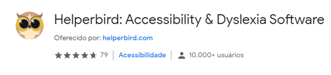
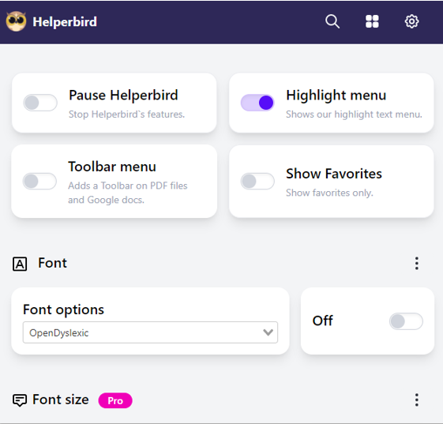
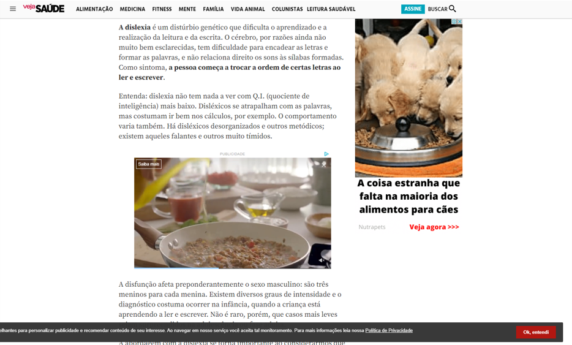
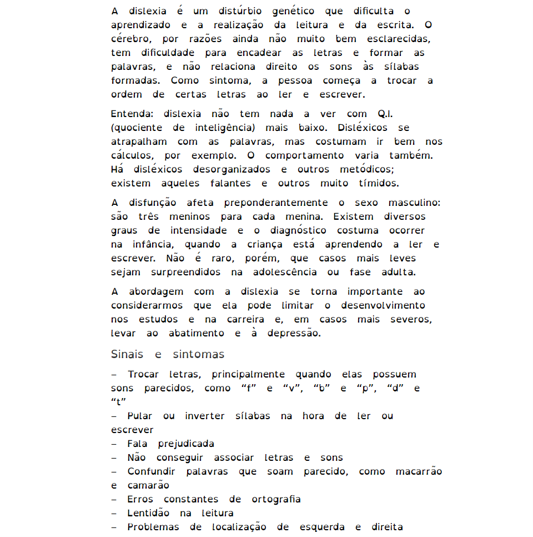
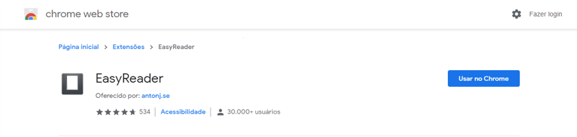
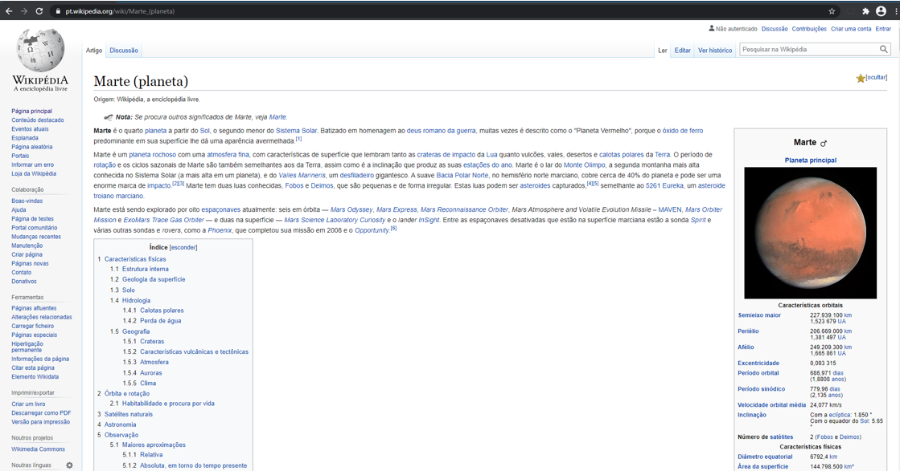
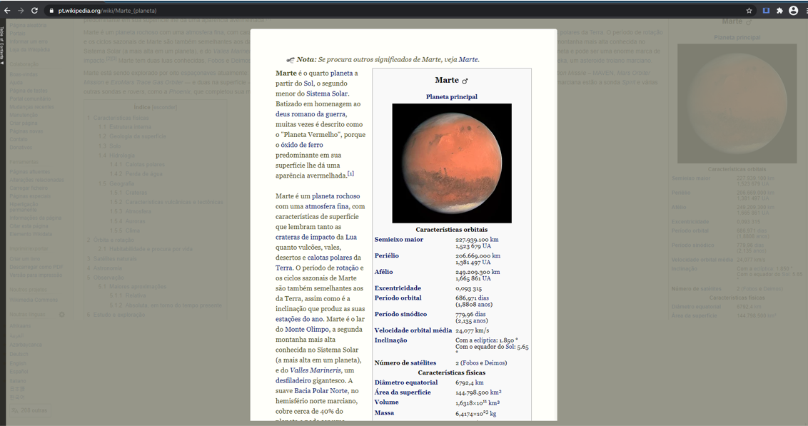

O conceito de deficiência cognitiva é extremamente amplo, e nem sempre bem definido.
Em termos gerais poderíamos dizer que uma pessoa com deficiência cognitiva está sujeita
a ter maior dificuldade ao executar um ou mais tipos de tarefas mentais do que a pessoa com
capacidade mediana.
Dislexia
O que é?
Distúrbio de aprendizagem caracterizado pela dificuldade de leitura.
A pessoa tem dificuldade para encadear as letras e formar as palavras,
e não relaciona direito os sons às sílabas formadas. Como sintoma, a pessoa
começa a trocar a ordem de certas letras ao ler e escrever.
Sintomas:
Trocar letras, principalmente quando elas possuem sons parecidos,
como “f” e “v”, “b” e “p”, “d” e “t”.
Pular ou inverter sílabas na hora de ler ou escrever.
Fala prejudicada.
Não conseguir associar letras e sons.
Confundir palavras que soam parecido, como macarrão e camarão.
Erros constantes de ortografia.
Lentidão na leitura.
Solução:
Utilizar fontes que facilitam a leitura para pessoas com dislexia, como
Open Dyslexic e Comic Sans.
Maior espaçamento entre letras e parágrafos.
Separação de parágrafos com demarcação de cor de fundo.
Leitor de tela.
Transcrição de voz para texto, para facilitar a escrita.
"Helperbird: Accessibility & Dyslexia Software"
Dentre os plugins de acessibilidade pesquisados, Helperbird é um dos mais completo
e acessíveis.
Com mais de 10.000 usuários no Chrome, está disponível também para Firefox e Edge.
Preço da versão Pro: 40 dólares ao ano.

A versão Pro possui mais que o dobro de configurações que a versão gratuita,
custando 40 dólares ao ano enquanto algumas extensões concorrentes chegam a mais
de 100 dólares ao ano.
Algumas configurações da versão Pro podem ser obtidas de outra maneira,
como por exemplo, o tamanho da fonte, que pode ser configurado nativamente
pelos navegadores.
As opções de acessibilidade vão além da dislexia, tendo soluções para diversos
tipos de deficiências, como baixa visão, daltonismo e déficit de atenção.

SITE NORMAL

MODO LEITURA COM FONTE "OpenDyslexic"

Transtorno do Déficit de Atenção com Hiperatividade (TDAH)
O que é?
Transtorno neurobiológico, de causas genéticas.
Aparece na infância e frequentemente acompanha o indivíduo por toda a sua vida.
Se caracteriza por sintomas de desatenção, inquietude e impulsividade.
Chamado às vezes de DDA (Distúrbio do Déficit de Atenção).
Solução:
Modo leitura, removendo distrações da página, como imagens e anúncios.
Readability, Equal Entry, BeeLine Reader, EasyReader, WebHelpDyslexia e Helperbird.
"Easy Reader"
É uma extensão para Chrome completamente gratuita.
Com mais de 30.000 usuários.
Cria um pop-up limpo e sem distrações com o texto selecionado pelo usuário.

SITE NORMAL

MODO LEITURA COM EXTENSÃO "Easy Reader"

Autismo
O que é?
O Transtorno do Espectro Autista (TEA) é um transtorno mental que reúne desordens
do desenvolvimento neurológico.
Presentes desde o nascimento ou começo da infância.
Sua causa não é conhecida.
Há uma grande variedade de características.
Eixos do Transtorno do Espectro Autista
Quociente Intelectual
Interação social
Comunicação
Comportamentos repetitivos
Regulação sensorial
Atividade motora
Déficit severo
Isolado
Não verbal
Severos
Hipossensibilidade
Hipo
Moderado
Passivo
Verbal
Leves
Hipersensibilidade
Hiper
Alto funcionamento
Sociável, mas estranho
-
-
-
-
Solução:
Leitores de tela: Screen reader, NVDA e DOSVOX.
Mudança esquema de cores: High Contrast e Dark Background and Light Text.
Comunicação Aumentativa e Alternativa (CAA): AraBoard, Plaphoons e Scala.
Conversor de fala para texto: Dictanote.
Conversor de texto para áudio: SpeakIt e Read Aloud.